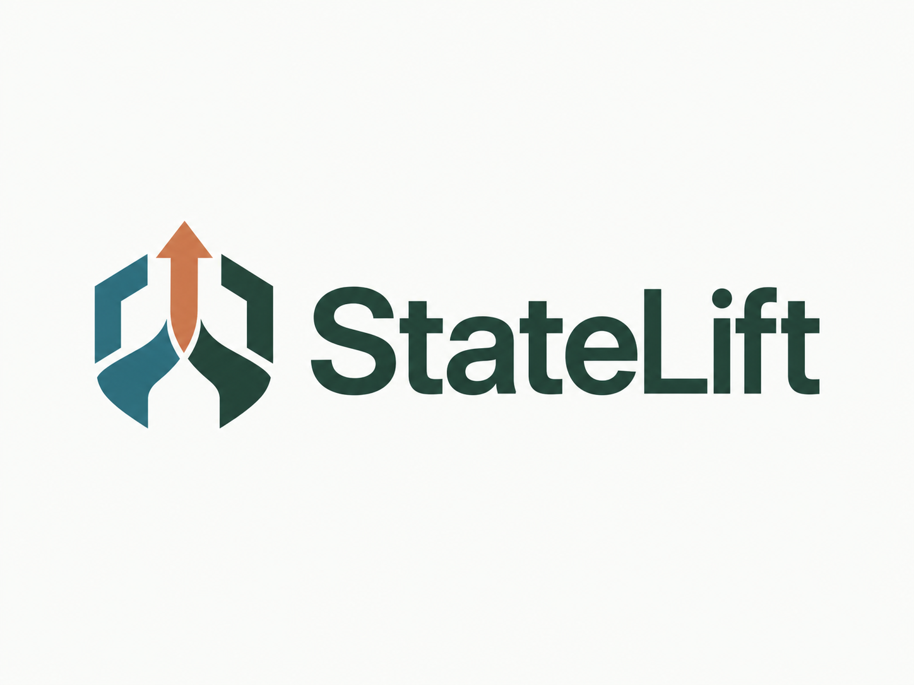

View settlement or release transaction ↗
| Balance bucket | Before | After | Change |
|---|

StateLift / source & evidenceA proof that a payment goal was still unfilled releases its guarantee. The goal stays open for another executor.
Attestcoin proves what happened. StateLift proves a payment hadn’t.
Read-only · Creditcoin testnet + Ethereum Sepolia · No wallet, signatures or transactions required.
View settlement or release transaction ↗
| Balance bucket | Before | After | Change |
|---|